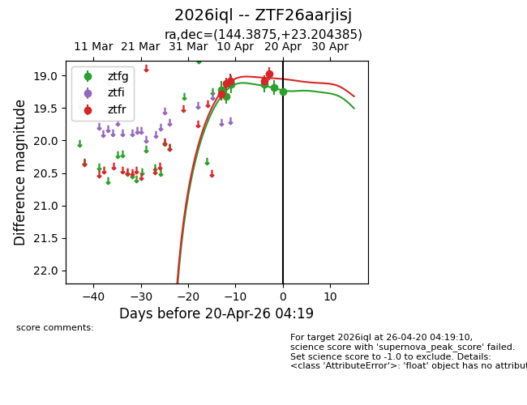
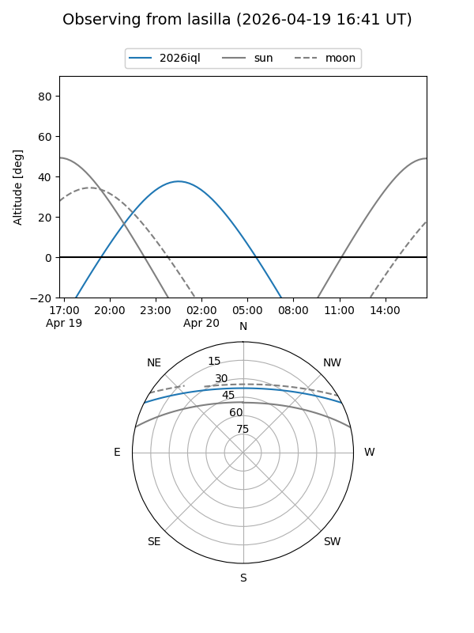
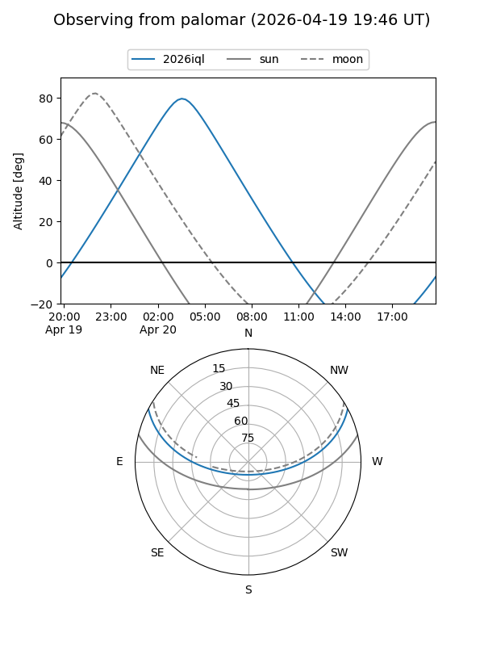
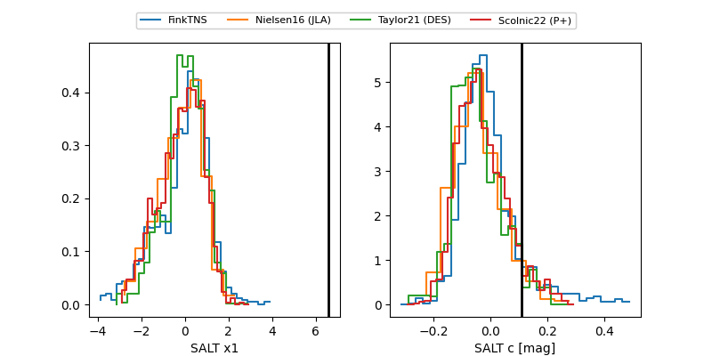

2026iql
Target 2026iql at 2026-04-20 04:29
Aliases and brokers:
FINK: link
Lasair: link
ALeRCE: link
TNS: link
YSE: link
alt names
ZTF26aarjisj (ztf,fink_ztf)
2026iql (tns,yse)
Coordinates:
equatorial (ra, dec) = 144.3875,+23.20438
equatorial (HMS+DMS) = 09:37:33.00,+23:12:15.79
galactic (l, b) = (206.8915,+46.21828)
Flags:
Photometry:
last ztfg=19.25, ztfr=18.97
6 ztfg, 5 ztfr detections
Lightcurve

Visibility


Additional plots
